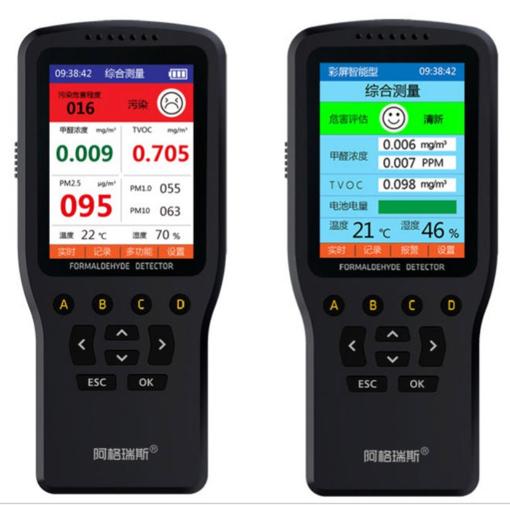

空氣品質檢測儀
選購要點
空氣品質量測方法
-
PM2.5標準測量法：
標準重量法：以定流量抽引空氣進入特定形狀之採樣器進氣口，經慣性微粒分徑器，將氣動粒徑小於或等於 2.5 微米之細懸浮微粒收集於濾紙上。而此濾紙於採樣前、後均於特定溫度與濕度環境中調理後秤重，以決定所收集之 PM2.5微粒之淨重
簡易計數法：而一般空氣清淨機內建的偵測器，或是手持式的裝置以相對精準的雷射原理來說，是計數，所以例如小二在用的Dylos DC1100 pro，就可以看到是分別對於粒徑 > 0.5um跟 > 2.5um的顆粒數。目前一般手持式偵測極限應該是0.1-0.3um，更小的顆粒無法順利偵測，所以其實PM2.5中已經有一部分的顆粒偵測不到了。 -
甲醛標準測量法：
標準液相層析法: 空氣中氣態之醛類化合物，以定流量之採氣泵收集至含2,4-二硝基苯胼和過氯酸溶液之收集瓶中，樣品經0.45um濾膜過濾後，直接注入高效能液相層析系統，測定樣品中醛類化合物之含量
參考資料
- 家電好控 2018/01/18 關於偵測器，其實不要抱太大期待
- 每日頭條 2017/05/02 揭秘甲醛檢測儀數據相差數十倍的秘密
露天 $2,150, 蝦皮購物 $2,130, 蝦皮購物 公司貨 $3,499,
BigGo $2,349 PChome $3,499

依據桃園市內空氣品質資訊網的建議標準：
- 甲醛（HCHO）: 每小時 0.08 ppm, 0.098 mg/m3
- 揮發性有機化合物（TVOC，包含：十二種苯類及烯類之總和）： 每小時 0.56 ppm 或 1.808 mg/m3
- 一般正常情況下，室內TVOC濃度通常在0.2 mg/m3到 2 mg/m3 之間，當室內VOC濃度在0.16 mg/m3 ～ 0.3 mg/m3 時，對人體健康基本無害，但在裝修中往往會超過這一指標，特別是在不當裝修的情況下。
- 當TVOC濃度為3.0~25 mg/m3 時，會產生刺激和不適，與其他因素聯合作用時，可能出現頭痛；
- 當TVOC濃度大於25 mg/m3 時，除頭痛外，可能出現其他的神經毒性作用，嚴重時可損傷肝臟和造血系統，出現變態反應等。
廠牌匯總
{{ section | formatted}}
注意：點擊下面圖片,進入廠商網站
- {{post.Product}}
- NT$ {{post.Price}}
- {{post.Function}}
- 介紹影片